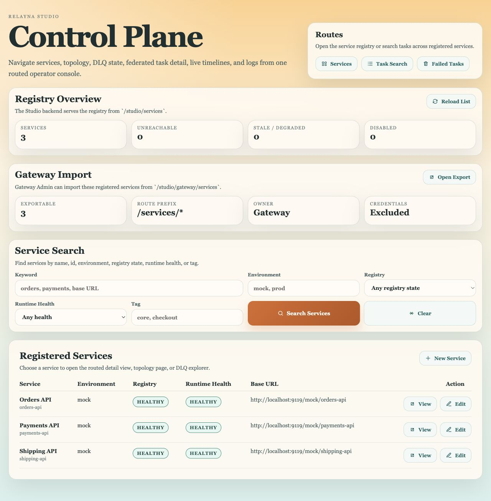
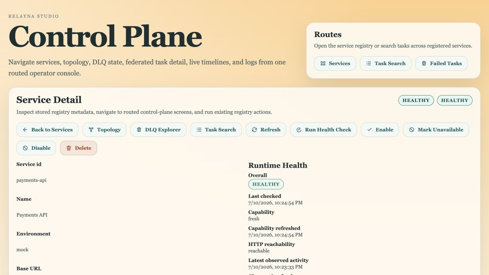
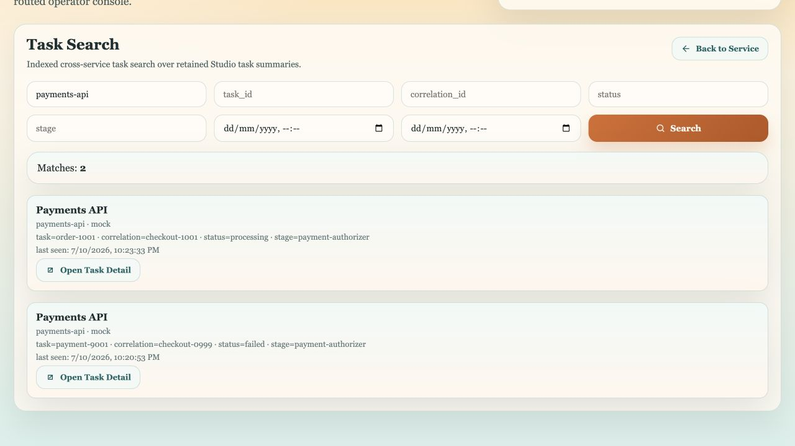
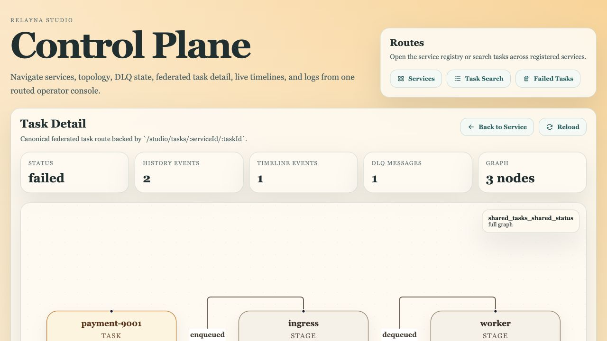
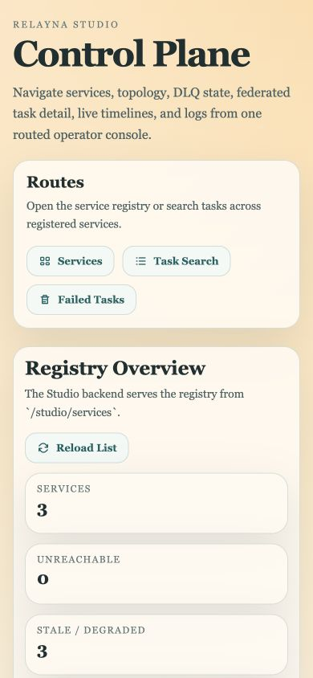

SDK source
13,672
Python lines across 94 files
Codebase assessment · 10 July 2026
The SDK already covers transport, workflow contracts, retries, DLQ, live status, execution graphs, leases, policy decisions, and observability. Studio exposes much of that power, but its operator experience gives nearly every surface equal weight. The recommended direction is to optimize the shared hot paths, then redesign Studio around incident triage and progressive disclosure.
Executive view
The product is not short on features. The highest return is in removing serial work from runtime hot paths and reorganizing Studio around the operator’s next decision.
SDK: build parity in bounded concurrency, reduce Redis round trips, and replace full scans/N+1 reads with cursor-native indexes. Studio: replace the recurring hero and long all-in-one pages with a compact product shell, incident-first overview, and task/service workspaces that reveal detail on demand.
| Section | Owns | Primary dependency | Primary improvement goal |
|---|---|---|---|
| SDK | Contracts, RabbitMQ transport, consumers, Redis state, FastAPI routes, workflow runtime, DLQ, observability | RabbitMQ + Redis | Throughput, bounded work, durable pagination, extensible runtime policy |
| Studio backend | Registry, federation, retained events/search, health refresh, Loki, Prometheus, Tempo, notifications | SDK service routes + Redis + observability providers | Efficient aggregation and stable operator-facing models |
| Studio frontend | Service registry, health, topology, DLQ, failed tasks, search, task investigation | /studio/* only | Operational hierarchy, fast triage, accessible filters, progressive disclosure |
Section 1
The package boundaries are strong and the capability surface is unusually complete for a service-side task SDK. Performance risk is concentrated in a small number of serial loops and Redis access patterns, which makes a focused optimization program realistic.
Clear package ownership, typed contracts, explicit topology classes, bounded task-consumer concurrency, broker-delayed retry, low-cardinality metrics, OTel trace propagation, and extensive freeze coverage.
Several APIs advertise prefetch, inflight, or pagination semantics while their implementations still do serial work or scan the retained set. That gap will widen under high task and event cardinality.
Add a benchmark harness first, optimize internal storage/dispatch behind existing contracts, and treat new policy/idempotency hooks as compatibility-sensitive work rather than casual exported additions.
TaskConsumer dispatches concurrently when prefetch is greater than one. WorkflowConsumer, AggregationConsumer, and StatusHub still await each delivery inside a single loop. For workflows, max_inflight currently changes broker prefetch but not local execution concurrency.
Action: extract the proven bounded-dispatch primitive from TaskConsumer; add parity to workflow and aggregation consumers; shard status handling by task_id so ordering is preserved per task while different tasks progress concurrently.
The hub acknowledges a broker message before the Redis write. A transient Redis failure can therefore lose the status even though the dedupe keys make redelivery safe. One status can also incur a dedupe SET, a history pipeline, then a second dedupe SET and feed pipeline.
Action: make delivery semantics explicit; prefer store-then-ack with idempotent redelivery, and atomically combine dedupe, history, pub/sub, and feed indexing with a Lua function or carefully bounded batch writer.
get_feed(limit=10) still runs LRANGE 0..feed_maxlen-1, validates every event, searches for the cursor in Python, and only then slices ten rows. Cost is tied to retention, not requested page size.
Action: use Redis Streams or a score/cursor index so work is proportional to the requested page. Keep the response contract while changing the internal cursor representation.
Indexed DLQ listing loads every id and fetches records one by one until it fills a page, then scans again to decide whether a next cursor exists. Failed-task listing and queue summaries have the same shape.
Action: make the sorted failed-task index the primary cursor; fetch candidate windows in bounded batches with MGET; maintain queue/filter secondary indexes or incremental summaries; remove stale ids during reads.
The graph service fetches status and observations serially for each related task, then invokes DLQ listing for each task. The graph builder also repeatedly scans attempts, stages, nodes, and edges to derive counts and nearest attempts.
Action: parallelize bounded history reads, add a task-indexed DLQ lookup, and build attempt/stage indexes in one pass. Cache immutable terminal graphs with a version derived from the latest source cursors.
Lease acquire, heartbeat, release, owner listing, and expiry claim use several sequential Redis commands. Individual task publishing awaits each publish, and batch-envelope expansion republishes each child sequentially before acknowledging the envelope.
Action: use Lua/pipelines for lease state transitions; add a bounded publisher-confirm window for individual batches; make batch expansion concurrency explicit while preserving order and partial-failure semantics.
Add a real-stack benchmark suite for publish throughput, consumer throughput, status ingest, SSE fan-out, DLQ pagination, and graph latency. Record p50/p95/p99, event loss/duplication, Redis commands per operation, and memory at fixed retention sizes. No performance-focused test or benchmark exists in the current test tree.
| Priority | Capability | Why it matters | Compatibility note |
|---|---|---|---|
| P1 | Injectable runtime policy engine | The public policy types already accept pressure and lease context, but consumers construct a private default engine. Injection makes adaptive retry and backpressure actionable. | Constructor/signature change; requires freeze review or a new compatible builder. |
| P1 | Distributed task idempotency + middleware | IdempotencyBackend and MiddlewareChain are exported but not integrated into TaskConsumer. Add Redis in-progress/completed semantics, TTL, and handler hooks. | Prefer additive composition in the next approved public surface. |
| P1 | Closed-loop pressure controller | Backpressure is currently a read-only snapshot. A controller could adjust concurrency, publishing, or retry delay with hysteresis and hard safety bounds. | Opt-in; never change defaults silently. |
| P2 | Durable event cursors | Redis Streams-based cursors improve pagination, resume, retention, and observability lag measurement across SDK and Studio. | Preserve external response fields; migrate internal Redis keys deliberately. |
| P2 | Runtime latency/lag telemetry | Add low-cardinality histograms for broker-to-handler delay, handler duration, Redis persist duration, status-hub lag, and graph assembly time. | Additive metrics; review names and cardinality before freeze-manifest changes. |
| P2 | Terminal graph snapshots | Persist or cache a terminal execution graph to avoid reconstructing the same history for every Studio view. | Internal optimization unless a new persisted schema is exposed. |
Section 2
Studio has a strong federated backend boundary and a distinctive visual identity. Its UI is currently optimized to expose everything the system can do, not to help an operator quickly decide what to do next.
The browser speaks only to /studio/*; the backend owns federation, provider access, URL policy, normalized errors, retention, search, and health. Live SSE and graph views are already wired.
The large recurring brand header, route card, repeated section cards, and equal-weight actions make high-value operational signals compete with navigation and configuration detail.
A compact console shell, an incident-first home, and separate overview / observe / investigate / configure tabs for each service. Keep the warm brand palette, but reserve serif type for identity rather than dense operational data.
The captured flow used the current Vite frontend, local Studio backend, Redis, and the repository’s three mock Relayna services. Each screenshot below was captured and inspected during this audit.

The visual system is coherent and the table is readable, but the page starts with a large hero, a route card, two summary panels, and a broad search form before the service list.

The first service workspace exposes ten actions, including destructive operations, before the metadata and health detail. Two unlabeled “healthy” pills repeat state without explaining their dimensions.

The search works and results are scannable at small volume, but inputs depend on placeholders instead of persistent labels; date controls are visually unlabeled; status and stage are embedded in a flat metadata sentence.

The graph is an excellent differentiator and the summary counts establish scope. Above the fold, however, the task id, service, correlation id, failure reason, and recommended next action are not presented as a single incident header.

The layout reflows without horizontal clipping and the table becomes cards, which is good. The brand header, route card, and one-column metrics consume the first screens before any registered service appears.
| Priority | Change | Operator outcome | Effort |
|---|---|---|---|
| P0 | Compact application shell Sidebar/top bar, active route, global search, environment scope, alert count | Operational content appears immediately on every route; mobile time-to-content improves. | Medium |
| P0 | Incident-first task workspace Failure summary, identity, next action, tabbed evidence, context rail | Faster failed-task triage and fewer scroll/context switches. | Medium–high |
| P1 | Service workspace information architecture Overview / Observe / Configure, safe action grouping | Separates daily monitoring from rare configuration and destructive actions. | High |
| P1 | Labeled, URL-backed search filters Visible labels, chips, saved views, clear/reset, result table | Better accessibility, shareable searches, and high-volume scanning. | Medium |
| P1 | Capability-aware empty states Summarize missing providers once with a “Configure” path | Stops long pages from repeating unavailable panels and turns absence into an action. | Medium |
| P2 | Operator typography and density Sans-serif data UI, compact cards, consistent status color/icons, explicit timezone | Faster scanning while retaining Relayna’s warm brand identity. | Low–medium |
Task Search and several failed-task/DLQ filters use placeholders as their only visible labels. Active route state is not communicated. The responsive layout reflows without obvious horizontal clipping. The confirmation dialog includes modal semantics and focus-management code.
Color contrast through translucent surfaces, full keyboard order, React Flow keyboard interaction, focus visibility across every control, screen-reader announcements for SSE updates, zoom at 200–400%, reduced motion, and error recovery cannot be certified from screenshots alone.
| Priority | Evidence | Why it affects UI/UX | Recommendation |
|---|---|---|---|
| P1 | ServiceDetailPage.tsx 1,816 lines / 21 state hooks; TaskDetailPage.tsx 1,597 lines / 14 state hooks | Large pages make loading, error, filtering, and responsive behavior hard to reason about and easy to regress. | Split by workspace tab and domain hook; centralize request/window state with reducers. |
| P1 | 433 inline style uses across pages and ui.tsx | Responsive and state variants are scattered between CSS and component code. | Create a small internal component/token layer: PageHeader, Toolbar, FilterField, StatusChip, MetricCard, EmptyState, DataTable, SidePanel. |
| P1 | Single production JS chunk: 504.86 KB minified / 149.93 KB gzip; build warning | Every route pays for graph and investigation code up front. | Route-level lazy loading; isolate React Flow and trace exploration into async chunks. |
| P1 | Studio event history loads up to 5,000 ids then issues one Redis GET per event | Slow backend panels become slow loading states and stale UI. | Use bounded list windows + MGET, stream cursors, and server-side filter indexes. |
| P2 | Health records, service search documents, and some provider fallbacks are loaded sequentially | Registry/search latency grows with service count and can make the overview feel unreliable. | Pipeline Redis reads and use bounded concurrency for remote providers/health refresh. |
| P2 | Frontend test suite is 2 files / 48 passing tests; one file is 2,705 lines | Good coverage exists, but feature-level ownership and test diagnosis will worsen as tabs/components are extracted. | Co-locate tests by route/workspace and add keyboard/responsive tests for the redesigned primitives. |
The internal control-plane roadmap still marks auth, trust, and operator controls as planned. Before Studio becomes a broad operational control plane, pair the UI redesign with role-aware action visibility, audit history, and explicit actor identity—especially for disable, delete, retry, and payload override operations.
Shared plan
Sequence performance and product work so measurements, stable models, and UI changes reinforce one another.
| Area | Metric | Initial target |
|---|---|---|
| SDK throughput | Messages/sec and p95 end-to-end latency at fixed worker count | ≥2× on workflow/status paths without ordering or loss regression |
| Redis efficiency | Commands per status, feed page, DLQ page, and graph view | Bounded by page/batch size; no retained-set full scan for a small page |
| Studio speed | p95 API + page interactive time for 100 services / 100k retained tasks | Define from baseline; enforce a budget per workspace |
| Operator efficiency | Time and steps from failed-task alert to understood cause / next action | 30–40% reduction in moderated task walkthroughs |
| Accessibility | Keyboard completion, labelled controls, automated violations, screen-reader task flow | Zero unlabeled inputs; full critical-flow keyboard completion |
| Frontend delivery | Initial JS and route-specific async chunks | Remove the >500 KB warning; graph code loads only where needed |
Method
Claims in this report are tied to source inspection, a current local UI flow, or a clearly labelled synthetic measurement.
The repository freeze manifests currently identify v1.4.26, while the contributor policy describes v1.4.21 as the strict production boundary. Before implementing public API or route changes, reconcile which manifest/boundary is authoritative. Internal optimizations that preserve responses and delivery semantics can proceed first, but Redis key migrations and acknowledge-order changes still need explicit rollout plans.
{kind=link}
{kind=link}
{kind=link}
{kind=link}
{kind=link}